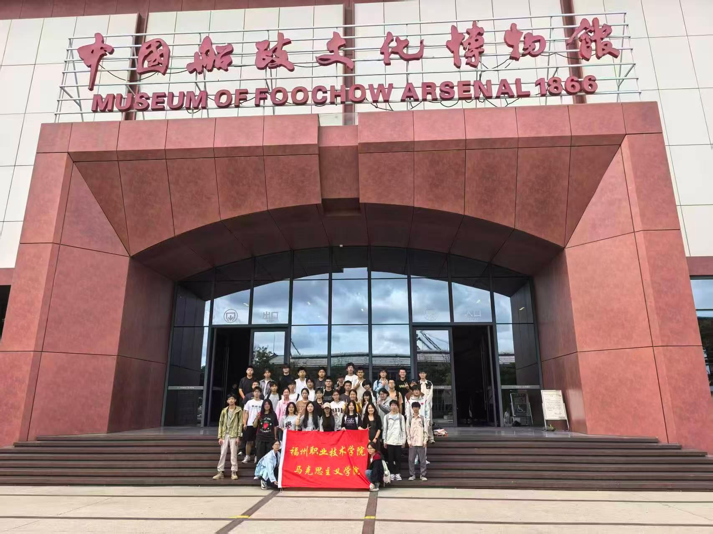
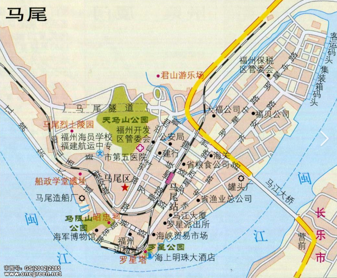
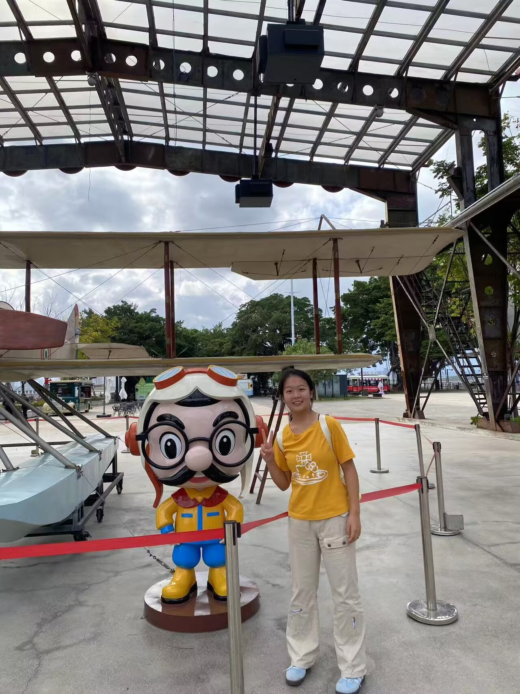

一次参观中国船政文化博物馆的经历，让我第一次系统地了解了福建船政的历史。
左宗棠、沈葆桢、船政学堂、扬武号……这些名字和故事深深吸引了我。中国近代史上，竟然有这样一个地方，承载着民族自强的梦想，培养出严复、邓世昌、詹天佑等一代英才。

我被这段历史深深打动，决定制作这个网站，把船政文化分享给更多人。希望通过这个网站，让更多人了解马尾、了解船政、了解那段向海图强的峥嵘岁月。
一次参观中国船政文化博物馆的经历，让我第一次系统地了解了福建船政的历史。
左宗棠、沈葆桢、船政学堂、扬武号……这些名字和故事深深吸引了我。中国近代史上，竟然有这样一个地方，承载着民族自强的梦想，培养出严复、邓世昌、詹天佑等一代英才。

我被这段历史深深打动，决定制作这个网站，把船政文化分享给更多人。希望通过这个网站，让更多人了解马尾、了解船政、了解那段向海图强的峥嵘岁月。
我沿着这条路线，一步步走进船政历史：


🌟 船政精神 · 薪火相传 🌟
感谢您访问我的网站，希望这次“马旅”能带您走近船政、了解船政、爱上船政。